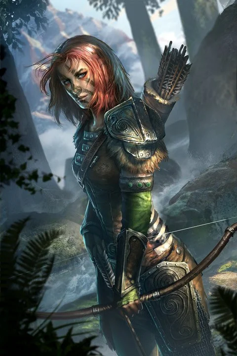
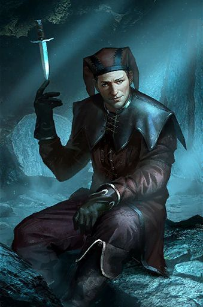
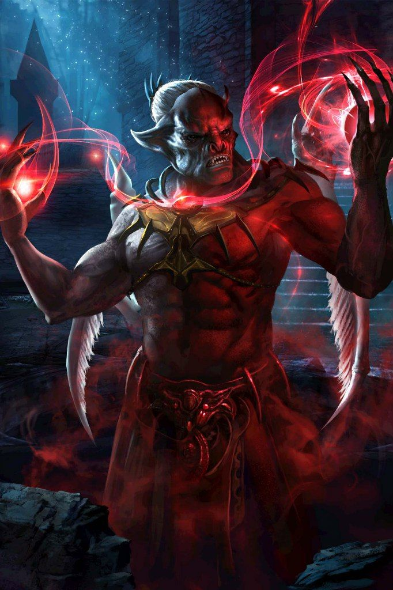
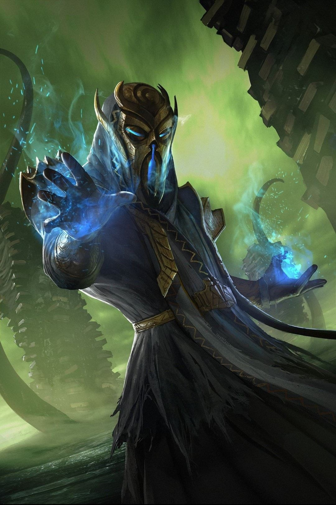
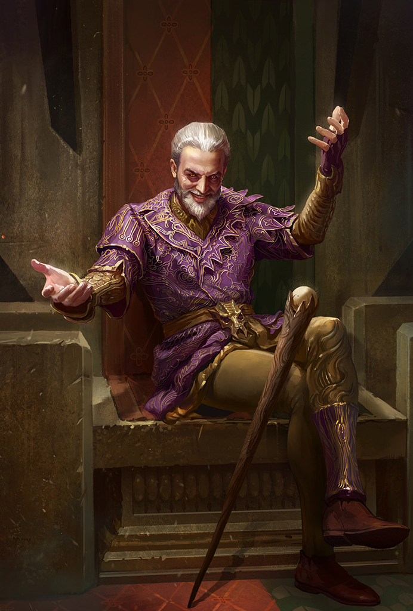
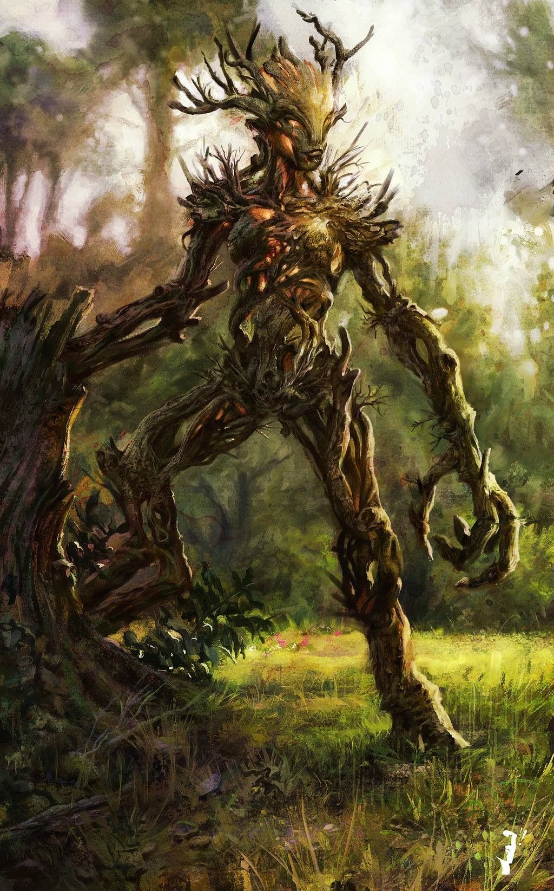

-
Aela The Hunteress
Aela the Huntress is a Nord werewolf, thief and member of The Companions. She is one of five members of The Circle. Residing in Jorrvaskr with the other Companions
 -
Cicero
Cicero is an Imperial assassin and Keeper of the Dark Brotherhood (A creed of assassins). As Keeper, he is responsible for caring for the Night Mother's body and casket. Little is known of him.
 -
Lord Harkon
Lord Harkon is an ancient Nordic pure-blood vampire and progenitor of the Volkihar bloodline in Skyrim. He lives in Volkihar Keep off the coast of Haafingar with the rest of his brood. He seeks to block out the sun by fulfilling an ancient prophecy recorded within the Elder Scrolls, one of which is held by his daughter, Serana.
 -
Miraak
Miraak is the first Dragonborn recorded in history. He ruled over the island of Solstheim, where a large temple was dedicated to him. He served as a leader of the Dragon Cult and possessed a Dragon Priest Mask called Miraak, given to him by the dragons. At some point, he sought out the teachings of Hermaeus Mora, the Demon of Knowledge, and became his champion.
 -
Sheogorath
Sheogorath is the Daedric Prince of Madness. His realm in Oblivion is known as the Shivering Isles, otherwise known as the Madhouse or "The Asylums". It is separated into two distinct communities: Mania, the fantastic, colorful side, where art enthusiasts and insane revelers reside, and Dementia, the horrific, dark and ominous side, inhabited by those with the darker side of Sheogorath's blessings.
 -
Spriggan
The Spriggan is a tree-like creature native to the continent of Tamriel, where they are often found underground in caves, or in dense forests. They can be very agressive to intruders.
